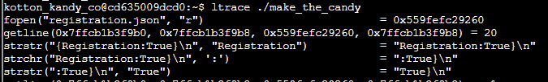
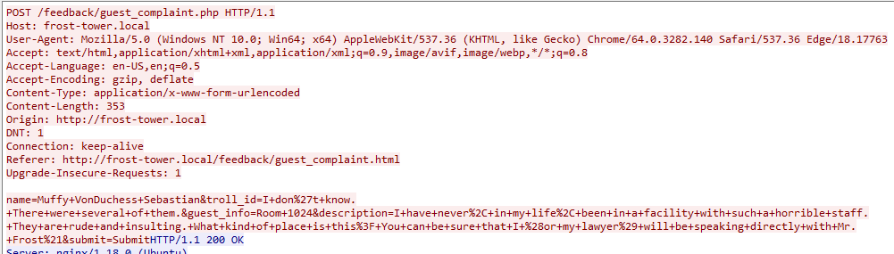
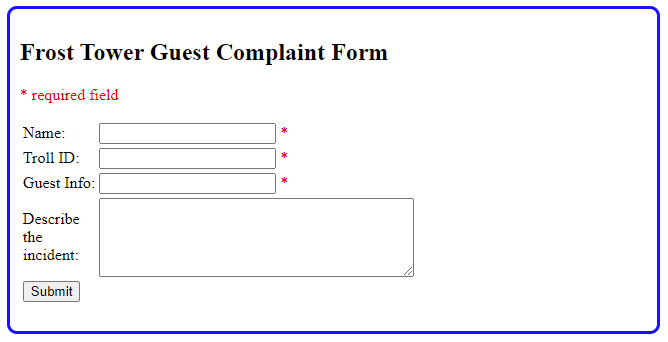

This candy making machine requires a registration file but there is none. Just use

This is just some basic PCAP analysis. Once you open the PCAP in wireshark, you can follow TCP stream and just start incrementing the streams to see every submission. Even Muffy VonDuchess Sebastian, who wrongly used the complaint form meant for the workers? I think the workers are using the form wrong. Haha! The three trolls you're after are:


Here is a list of reprisals for the guests when the staff dislikes them:
-The key card for his room will be randomly rejected, requiring him to repeatedly vist the front desk for a replacement.
-We have activated the drip-o-matic function of her bathroom sink. It will drip loudly all night long.
-That's not a mint on your pillow...
-We have locked their television to only show reruns of Dr. Phil saying things like: "I don't care how flat you make a pancake, it still has two sides."
-We will add several random mini-bar charges to their bill.
-Three words: Explosive. Toilet. Malfunction.
-Housekeeping will be instructed to "accidentally" leave a tuna sandwich inside his room's heater.
-We will replace her bed sheets with ones that are suspiciously stained.
-We decree: SUPER SLOW WIFI.
-We have scheduled an "accidental" 4:00am wake-up call.
-### ERROR ###
-His television has been locked on and tuned to show re-runs of The Bachelorette, 24 hours a day.
-Sometimes, people get stuck in the elevator. Just sayin'...
-Housekeeping visit scheduled for 6:00am.
-Water pressure? What water pressure?
-I'm sorry, but our valet cannot currently find your vehicle. We'll call you when and if it is located.